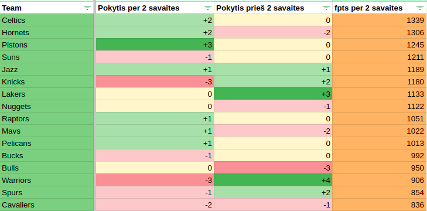

Dviejų savaičių apžvalga: Bostono viršūnės šturmas
2024-12-17

Praėjo dar dvi savaitės po paskutinės A lygos apžvalgos, o per tą laiką
nemažai dalykų pasikeitė - tiek lentelės viršuje, tiek viduryje,
tiek galiorkoje. Daugumą ypač nervino taurės mačai, kai varžybų per
naktį būdavo mažai, o normlių FA - dar mažiau. O bet tačiau sąlygos
visiems vienodos, o nuo šiol tvarkaraštis turėtų būti tik stabilesnis.
Šiuo metu yra sužaista apie 32% sezono, tad lentėje dar tikrai bus
visko.
Boston Celtics, praėjusią naktį besidžiaugusi monstrišku Jimmy Butler
pasirodymu, tapo geriasuia pastarųjų dviejų savaičių komanda,
surinkusi 1339FPTS. Jie netik pavijo lyderių trejetuką, bet ir sugebėjo
aplenkti dvi komandas bei pakilti į antrąją lentelės vietą. Puikią
formą demonstruoja Saboniukas, Jimmy su savo 83.25fpts praeitą naktį
irgi tarė svarų žodį, solidžiai atrodo ir Young, Sochan, Giddey. Netgi
Bane pradėjo rodyti gyvybės ženklus. Jei ši kapelą toliau tokiu ritmu
žygiuos, netruks Celtics gali pakilti ir į pačią viršūnę.
Antra geriausia laikotarpio komanda - Hornets, taip pat kilstelėjo iš
trečios vietos į pirmąją, bei dėka savo ilgos rotacijos bent kuriam
laikui įsitvirtino viršūnėlėje.
Trečia geriausią 2 savaičių komanda - Pistons. Po traumos atsigavęs
Luka už pakarpos pastūmė Pistons per 3 pozicijas ir gerokai
praskaidrino teksto autoriaus nuotaikas. Po traumos grįžo ir Eday,
Kawhi kažkokius gyvybės ženklus irgi pradėjo rodyti, tad labai
tikiuosi, kad Pistons progresas ties 7 vieta nesustos.
Neitin daug nuo trejetuko atsiliko kiti lenteles lyderiai - Suns,
Knicks, Lakers, Nuggets. Visgi labiau norėtusi pažymėti Jazz
gerą formą - lentelės galo komanda sugebėjo būti penkta geriausia
šio laikotarpio komanda. Pagirtina ir kaip Pelikanai sugeba išlikti virš
iškritimo brūkšnio net ir turėdami komandoje "gyvabėdę" Embiid.
Iš komandų, kurioms reiktų sunerimti ar kurios norėtų pamiršti šį
laikotarpį, norėtusi pažymėti keturias. Warriors po sėkmingos praeitos
atkarpos, kai pakilo per 4 pozicijas, šįkart padarė
didžiausią (kartu su Knicks) šuolį žemyn - per 3 pozicijas.
Suomiu vunderkindas panašu ir toliau nepersitengia šį sezoną ir
nervina Šarūną. Bulls - 4 blogiausia komanda per 2 savaites jau kuris
laikas struglina. Ir nors pozicijų ji neprarado per 2 savaites, bet
kryptis gana aiški. Na o praščiausios komandos Spurs ir Cavaliers.
Ypač pastarajai reiktų susiimti, nes B lygą jai vis artyn ir artyn..
2 savaičių laureatai
MVP: Luka Doncic. Retai kas sugeba aplenkti Joker..
Pagaliau pradėjo žaisti? Tyrese Haliburton, rinkes po 32.5FPTS
Geriausi FA A.Dosunmu ir J.Champagnie
Šūdas: J.Harden (14fpts)
- prasti stripakai pasitaikė?
Šios dienos lentelė: